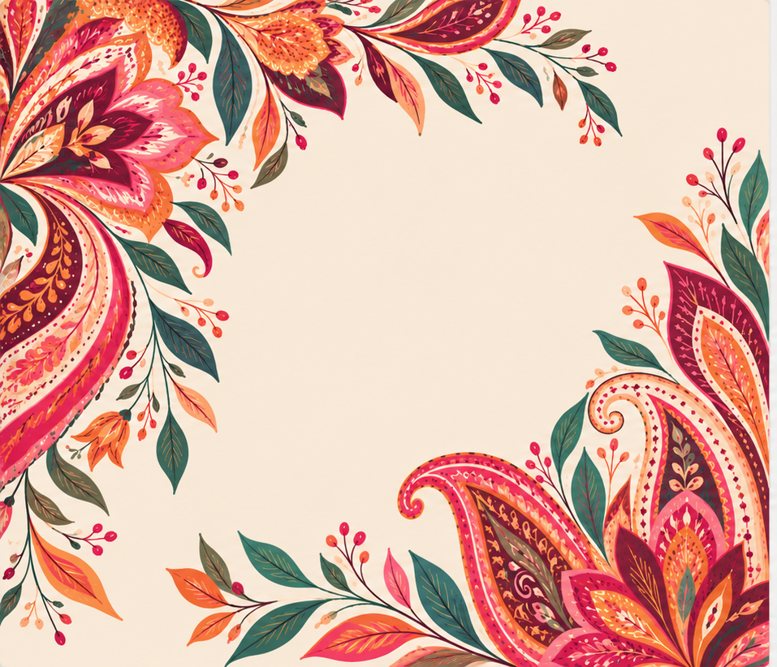

Protótipos — Planner da Diretora 2027
Escala real (21×18cm por página / 42×18cm na dupla aberta). Textos marcados RASCUNHO são placeholder — aguardando os textos definitivos aprovados por você. Deslize cada mockup na horizontal para ver por inteiro.
1 · Capa
Composição aprovada, sem título "Planner da Diretora", sem autoria, sem corações.

o que muito vale!
2 · Página de identificação
"Este planner pertence a…" — paisley mínimo, só um canto (intensidade 3).

3 · Carta de boas-vindas
Sem decoração — página de leitura. Texto de corpo é placeholder.
Diretora,
Esse planner nasceu de uma constatação simples: você não vive duas vidas. É a mesma mulher que fecha a folha de pagamento da escola e que também precisa lembrar da consulta médica, do aniversário da equipe e do seu próprio descanso. Por isso ele não separa o profissional do pessoal — ele junta.
Nas próximas páginas você vai planejar sua escola e vai planejar você. Use-o com a mesma seriedade que usa para tomar as decisões mais importantes do seu ano.
Com carinho,
Eduarda de Paula
4 · Página de exercício pessoal
"Antes de planejar, olhe para você" — perguntas placeholder, 3–4 linhas de resposta cada.
olhe para você
O que mudou em mim desde o último ano letivo?
O que eu preciso deixar de lado para 2027 ser mais leve?
O que eu quero sentir, com mais frequência, no dia a dia da escola?
5 · Minha roda da vida
Diagrama gerado por código (8 setores, anéis 2–10) — a diretora pinta à mão depois de impresso.
Pinte cada fatia até o número que representa o quanto você está satisfeita com essa área hoje. Quanto mais perto do centro, menos satisfeita; quanto mais perto da borda, mais satisfeita.
6 · Ferramenta de gestão — pilares
Corrige a falha do 2026: colunas rotuladas (início / meio / fim do ano) + ação por pilar.
Dê uma nota de 1 a 10 para cada pilar, três vezes ao longo do ano, e anote uma ação concreta para evoluir.
| Pilar | Início | Meio | Fim | Uma ação para evoluir |
7 · Abertura mensal (exemplo: janeiro)
Paisley grande em um canto (intensidade 2) + foco estratégico do mês.
Antes de a correria do ano letivo começar, decida o que vai guiar os próximos doze meses — para a escola e para você.
8 · Calendário mensal (janeiro de 2027)
Datas e feriado nacional calculados por código — segunda-feira como primeiro dia.
9 · Página dupla semanal — alternativa A (colunas por dia)
7 colunas iguais, manhã/tarde/noite em cada uma, fim de semana do mesmo tamanho que os dias úteis.
10 · Página dupla semanal — alternativa B (linhas por dia)
7 linhas horizontais, mais espaço de escrita por período, tira fixa de prioridades no topo.
11 · Fechamento mensal (janeiro)
Página que não existia no 2026 — fecha o mês e já aponta o próximo.